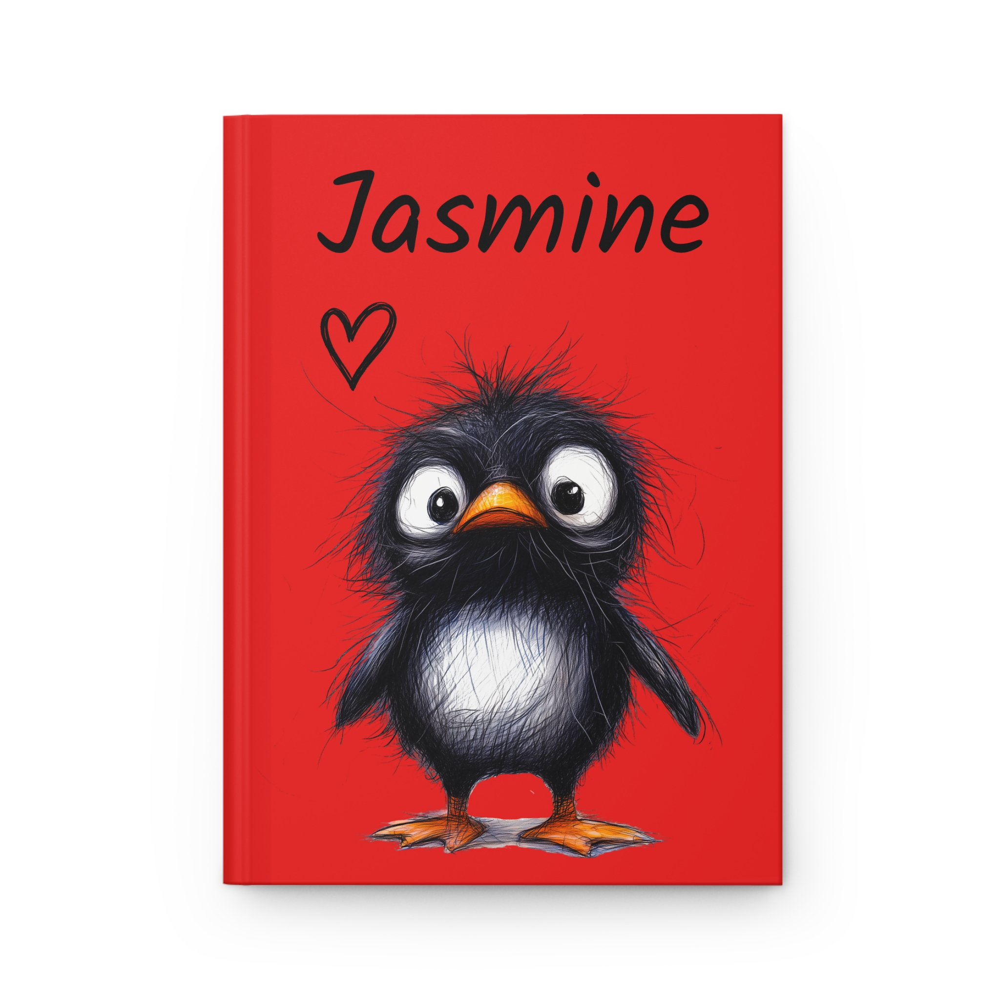
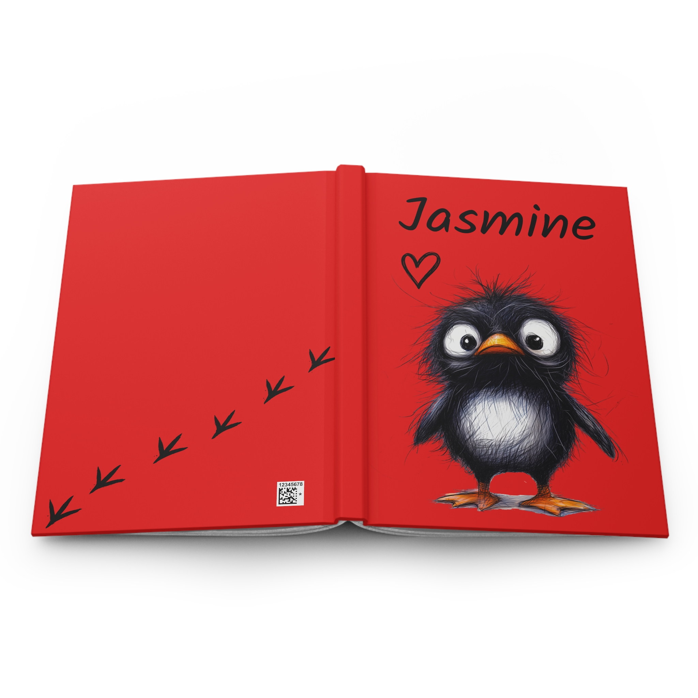
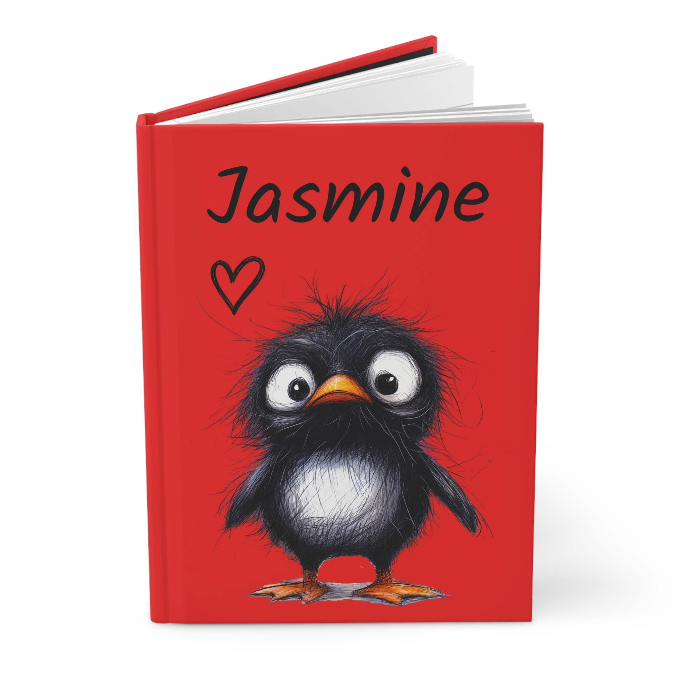
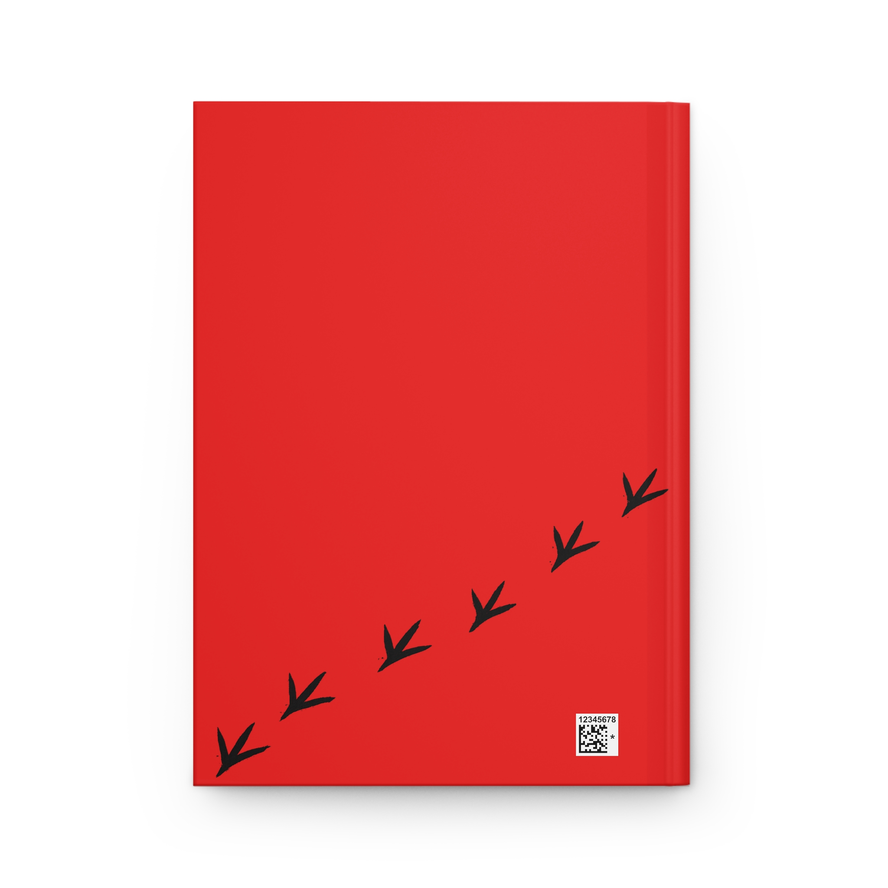

Cute. Fun. Uniquely yours.
A playful place for notes, dreams, plans and everyday thoughts. This bright red hardcover journal features a wonderfully expressive penguin and is personalized with the name you choose.
- 150 lined pages for writing and notes
- Hardcover format for everyday use
- Approximately 5.75 × 8 inches
- Personalized with your name on the front cover
- Playful penguin artwork with coordinating back-cover footprints
- Made to order
Look inside







Ways to use your personalized journal
A personalized lined journal can change with you. Use the whole notebook for one purpose or let each section hold something different.
Daily thoughts
Write a few lines about the day, what stood out, what made you laugh or what you want to remember.
Notes & lists
Keep everyday notes, ideas, reminders and lists together in one easy-to-find place.
Dream journal
Keep it beside the bed and record dreams, details, feelings and recurring themes while they are still fresh.
Creative writing
Collect story ideas, character notes, poems, doodles, dialogue and those ideas that arrive when you least expect them.
Goals & progress
Write down a goal, break it into smaller actions and keep a simple record of what you tried and what comes next.
Gratitude & good moments
Save small wins, funny moments, favorite memories and things you appreciated enough to notice.
School or study notes
Use the lined pages for class notes, vocabulary, reading notes, study plans or ideas you want to revisit.
Brain dump
Put everything circling in your mind onto paper, then decide what matters now and what can wait.
Memory keeping
Add dates and record trips, milestones, family stories and ordinary moments that may become meaningful later.
Easy journal prompts
• What made me smile today?
• What is one thing I want to remember?
• What idea keeps coming back to me?
• What am I looking forward to?
• What is one small goal I can work on this week?
• What would make tomorrow easier?
• If I could learn anything right now, what would it be?
• What am I grateful I noticed today?
A fun gift made personal
The custom name turns a useful notebook into something that feels chosen specifically for its owner. The expressive penguin gives it a playful personality without limiting how the pages can be used.
It can make a thoughtful gift for birthdays, holidays, students, writers, journal lovers, coworkers, friends or anyone who appreciates quirky animal artwork.
No perfect journaling routine required
You do not need to fill a page every day. Write one sentence, make a list, capture an idea or fill several pages at once. A journal works best when it fits the person using it.
Frequently asked questions
Can I personalize the journal with any name?
Enter the name you would like printed on the cover in the personalization field on Etsy. Check the spelling carefully before ordering.
Are the pages lined?
Yes. The journal contains 150 lined pages.
What size is the journal?
It is approximately 5.75 × 8 inches.
Is it a hardcover journal?
Yes. This is a hardcover personalized journal.
What is on the back cover?
The red back cover continues the playful design with a trail of black bird footprints.
Where do I personalize and order it?
Personalization and checkout are handled through the Open Theory Cove Etsy shop.